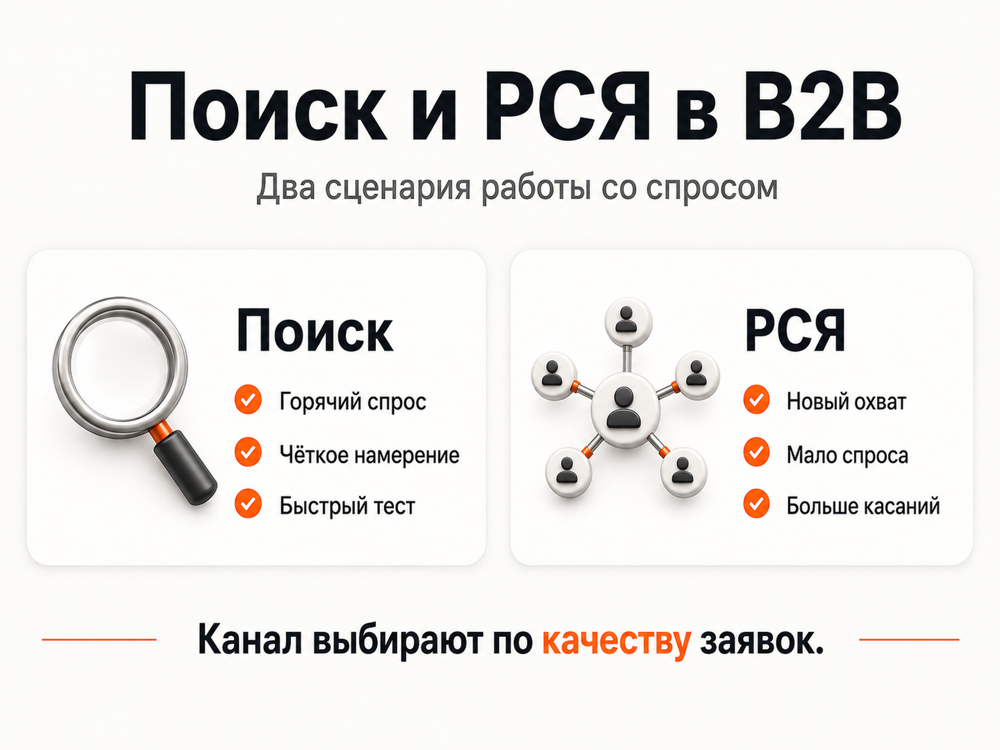
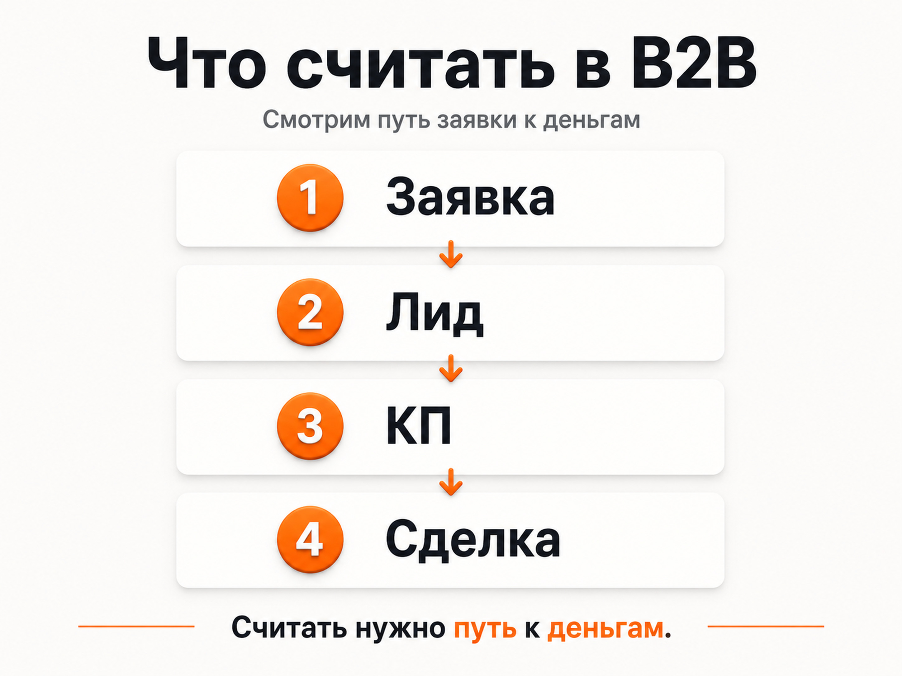

Блог о платном трафике
Настройка Яндекс Директ B2B: как получать качественные заявки
Настройка Яндекс Директ для B2B начинается не с ключевых фраз и объявлений. Сначала нужно понять, кто именно является целевым клиентом, какой запрос приводит к реальной продаже, как отделить бизнес-аудиторию от розницы и какие действия после заявки нужно передавать обратно в аналитику.
В B2B реклама часто работает с ограниченным спросом, длинным циклом сделки и высокой ценой ошибки. Поэтому цель кампании - не максимальное количество дешевых лидов, а управляемый поток обращений, которые соответствуют требованиям бизнеса.

Чем B2B-реклама отличается от обычной настройки Директа
В потребительской рекламе человек часто принимает решение быстро: увидел предложение, сравнил варианты, оставил заявку или купил. В B2B между первым кликом и деньгами может быть несколько этапов: запрос коммерческого предложения, согласование технического задания, расчет, переговоры, договор и только потом оплата.
Из-за этого стандартная оценка по количеству заявок часто вводит в заблуждение.
Для B2B характерны несколько особенностей:
- спрос может быть узким и низкочастотным;
- решение о покупке могут принимать несколько человек;
- один и тот же запрос может использовать бизнес и конечный потребитель;
- часть заявок отсеивается по объему заказа, региону, бюджету или техническим требованиям;
- сделка может происходить заметно позже первого обращения;
- цена квалифицированной заявки важнее цены любой отправленной формы.
Поэтому я обычно строю рекламу как цепочку: спрос → объявление → посадочная страница → обращение → квалификация → сделка.
Если речь идет именно о промышленности, близкая логика подробно разобрана в статье «Настройка Яндекс Директ для производства».
Что определить до запуска Яндекс Директа
До создания кампаний нужно собрать исходные данные по бизнесу. Минимально я выясняю:
- какие продукты или услуги нужно продвигать;
- какие направления приоритетны по марже;
- кто принимает решение о покупке;
- какой минимальный заказ подходит компании;
- в каких регионах реально можно продавать;
- какие запросы и обращения точно не подходят;
- какое действие считается квалифицированной заявкой;
- сколько бизнес может платить за такую заявку или клиента;
- есть ли CRM и можно ли передавать статусы лидов обратно в аналитику.
Этот этап напрямую влияет на структуру кампаний. Если у компании одновременно есть оптовые продажи, производство под заказ и отдельная услуга для партнеров, это три разных типа спроса. Объединять их в одну рекламную связку только потому, что они относятся к одному бизнесу, обычно невыгодно.
Как настроить Яндекс Директ для B2B
1. Разделить спрос по реальным задачам клиента
Я не начинаю с формального деления «одна кампания - одна услуга». Сначала смотрю, чем отличается намерение пользователя.
Например, для производителя одежды могут существовать разные сценарии:
- найти фабрику для пошива партии;
- купить готовую продукцию оптом;
- заказать разработку коллекции;
- найти производство под конкретное техническое задание.
У каждого сценария свой оффер, семантика, посадочная страница и допустимая стоимость заявки.
Это видно в моем кейсе фабрики детской одежды. Для пошива на заказ и продажи готовой продукции сделали отдельные лендинги. В результате каждый тип спроса можно было оценивать отдельно, а не смешивать в одной статистике.
2. Собрать коммерческую семантику и сразу фильтровать B2C
Для B2B недостаточно собрать все запросы, связанные с продуктом. Нужно понять, какие из них указывают на коммерческое намерение бизнеса.
Полезными могут быть формулировки с уточнениями:
- оптом;
- поставщик;
- производство;
- изготовление;
- под заказ;
- для бизнеса;
- для компании;
- партия;
- контрактное производство;
- по техническому заданию;
- дилер;
- дистрибьютор.
Но точные формулировки зависят от ниши. В некоторых направлениях человек вообще не пишет слово «оптом», хотя ищет поставщика для компании.
После запуска особенно важен отчет «Поисковые запросы». По нему видно, какие реальные формулировки приводят трафик. Нерелевантные запросы нужно исключать, а полезные направления - усиливать.
В B2B часто приходится отдельно минусовать розничный спрос, вакансии, обучение, самостоятельное изготовление, ремонт, бесплатные материалы и информационные запросы.
3. Выбрать Поиск и РСЯ по типу спроса
Универсального правила «B2B работает только на Поиске» нет.

Поиск лучше подходит, когда пользователь уже сформулировал задачу и выбирает поставщика или подрядчика. Для узкой ниши с ограниченным бюджетом я часто начинаю именно с него, потому что он позволяет сначала собрать самый горячий спрос.
В кейсе организации швейного производства основной поток шел с Поиска. Компания помогала брендам запускать производство одежды под ключ, а стоимость обращений держалась в диапазоне 1500-3000 рублей. Сам Поиск давал наиболее стабильные заявки примерно по 1500 рублей.
РСЯ полезна, когда прямого поискового спроса мало, когда его не хватает для нужного объема или когда нужно работать с аудиторией до момента сформированного запроса.
У фабрики детской одежды ситуация была обратной: основной объем обращений дала РСЯ, где удалось получать лиды примерно по 4 доллара при бюджете около 500 долларов в месяц. Поисковые заявки по направлению пошива были более горячими, но стоили дороже.
Поэтому я не выбираю канал по шаблону. Решение принимается по спросу, бюджету и фактическому качеству заявок.
4. Настроить автотаргетинг, а не пытаться его игнорировать
В актуальном Яндекс Директе автотаргетинг является обязательной частью показов на Поиске и в Картах. Полностью отключить его там нельзя, но можно управлять категориями запросов и упоминанием брендов.
Для Поиска доступны категории:
- целевые;
- узкие;
- широкие;
- альтернативные;
- сопутствующие.
В B2B я особенно внимательно отношусь к широким, альтернативным и сопутствующим запросам. Они способны расширить охват, но в узкой коммерческой нише могут быстро привести не ту аудиторию.
После запуска нужно смотреть статистику по категориям автотаргетинга и реальные поисковые запросы. Если отдельная категория дает дорогие или нецелевые обращения, ее можно ограничить.
При этом не стоит сужать кампанию только ради ощущения контроля. Если алгоритм уже находит качественный спрос, чрезмерная фильтрация может просто уменьшить количество полезных показов.
5. Сделать посадочную страницу под конкретный B2B-сценарий
В B2B сайт должен быстро отвечать на вопросы, по которым закупщик или собственник бизнеса отсеивает поставщиков.
На посадочной странице желательно сразу показать:
- что именно предлагает компания;
- для кого работает;
- минимальный объем или условия заказа;
- географию работы;
- сроки или принцип расчета сроков;
- технические возможности;
- реальные примеры работ;
- документы и сертификаты, если они влияют на выбор;
- понятный способ запросить расчет или коммерческое предложение.
Общий корпоративный сайт может быть хорош для SEO и репутации, но плохо конвертировать рекламный трафик по конкретной услуге. Если пользователь ищет производство партии товара, ему не нужно сначала изучать историю компании и десятки разделов каталога.
Это же видно в производственных проектах. Подробнее я разбирал эту логику в материале «Реклама производственной компании».
6. Настроить аналитику до запуска
Для B2B одной цели «форма отправлена» недостаточно.
Минимально я стараюсь фиксировать:
- заявки с сайта;
- звонки;
- обращения через мессенджеры;
- запросы коммерческого предложения;
- скачивание или запрос каталога, если это действительно полезное действие;
- квалифицированные лиды;
- сделки и оплаты, если их можно передавать из CRM.
Яндекс Метрика позволяет загружать офлайн-конверсии и связывать действия после посещения сайта с рекламным источником. Это особенно важно при длинном цикле сделки, когда продажа происходит через несколько дней или недель после первого обращения.
Если реклама оптимизируется только на любую отправленную форму, алгоритм может находить аудиторию, которая легко оставляет контакты, но редко покупает. Чем ближе цель оптимизации к реальной ценности для бизнеса, тем полезнее данные для принятия решений.
7. Выбрать стратегию и бюджет под объем данных
Для B2B автоматическая стратегия не решает проблему отсутствия данных. Если кампания получает слишком мало конверсий, алгоритму сложнее понять, какого пользователя искать.
В Яндекс Директе стратегия «Максимум конверсий» может работать с недельным бюджетом, средней ценой конверсии или другими ограничениями. В официальных рекомендациях Яндекса для обучения стратегии ориентир по бюджету связан с возможностью получать не менее 10 конверсий в неделю.
В узком B2B это не всегда возможно на уровне сделки или даже квалифицированного лида. В таком случае я не задаю редкую цель просто ради формальной точности. Сначала можно использовать более частое, но все еще полезное действие, а по мере накопления данных передавать в Метрику более глубокие статусы из CRM.
Самая частая ошибка здесь - поставить слишком низкую целевую цену заявки и одновременно ограничить бюджет. Кампания получает мало трафика, конверсий не хватает, а специалист делает вывод, что канал не работает.
Что считать в B2B-рекламе
Главный показатель - не CTR и не цена клика.

Я смотрю на воронку минимум в четырех точках:
- Обращение.
- Квалифицированный лид.
- Коммерческое предложение или следующий этап продажи.
- Сделка.
Из этого уже считаются полезные для бизнеса показатели:
- CPL - стоимость любой заявки;
- стоимость квалифицированного лида;
- доля целевых обращений;
- стоимость перехода на следующий этап;
- стоимость привлеченной сделки;
- выручка и маржа по клиентам из рекламы.
Дешевый CPL может выглядеть хорошо в отчете, но быть бесполезным для бизнеса. Если из 20 дешевых лидов отдел продаж принимает только два, важнее сравнивать их с кампанией, которая дает меньше обращений, но выше долю подходящих клиентов.
Реальные B2B-примеры из моих проектов
Сложная услуга с высоким чеком и почти без прямого спроса
В кейсе выкупа акций компания продавала сложную B2B-услугу с чеком в несколько миллионов рублей. Прямого поискового спроса почти не было, поэтому стандартная схема «собрать ключи и запустить Поиск» не могла дать нужный объем.
Основной моделью стали РСЯ и Мастер кампаний. При бюджете около 300 000 рублей в неделю фиксируемая стоимость лида была около 4000-4200 рублей, а с учетом обращений, которые не попадали в основную аналитику, реальная стоимость оценивалась примерно в 2500 рублей.
Для такого проекта особенно хорошо видно, почему B2B нельзя ограничивать только прямыми коммерческими запросами.
Юридический B2B, где почти все лиды идут с Поиска
В кейсе юридического консалтинга ситуация противоположная. Пользователь обращается за услугой в момент конкретной обязательной задачи, поэтому около 99% лидов приходило с Поиска, а баннерная реклама почти не давала результата.
Стоимость обращения сильно различалась по типу услуги: простые лид-магниты могли давать заявки примерно по 150-300 рублей, а сложные направления стоили заметно дороже.
Здесь основной вывод не в конкретной цене лида, а в соответствии канала поведению аудитории. Когда человек ищет решение только в момент возникновения задачи, Поиск получает естественное преимущество.
Оптовая продажа с жестким ограничением бюджета
В кейсе продвижения суперфуда задача состояла не в увеличении бюджета, а в снижении стоимости заявки. После перераспределения трафика и отключения слабых связок CPL снизился примерно с 1300 до 600 рублей, а количество обращений выросло примерно вдвое при бюджете около 102 000 рублей.
Этот пример показывает еще одну сторону настройки B2B-рекламы: иногда рост находится не в новом трафике, а в правильном распределении уже существующего бюджета.
Частые ошибки при настройке B2B-рекламы
Смешивать B2B и B2C в одной кампании
Если компания работает только с оптом, это должно быть видно в ключевых фразах, объявлениях и на посадочной странице. Иначе алгоритм получает много сигналов от розничной аудитории.
Создавать десятки мелких кампаний без статистики
Избыточная сегментация выглядит аккуратно в кабинете, но может мешать автоматическим стратегиям накапливать данные. Разделять кампании стоит там, где реально различаются экономика, оффер, аудитория, география или посадочная страница.
Оптимизироваться на слишком легкую цель
Клик по кнопке или просмотр нескольких страниц не равен бизнес-результату. Такие цели можно использовать для диагностики, но опасно делать их основной целью оптимизации, если они плохо связаны с качественными заявками.
Не получать обратную связь от отдела продаж
Реклама видит форму, но не знает, подходит ли клиент по бюджету, размеру заказа или отрасли. Без CRM или хотя бы регулярной разметки лидов специалист оптимизирует кампанию вслепую.
Судить по первым нескольким дням
В B2B цикл сделки длиннее, а узкий спрос дает меньше данных. Кампанию нужно оценивать по достаточному объему статистики и по движению лидов по воронке, а не только по продажам первых дней.
Короткий чек-лист запуска
Перед запуском B2B-кампании я бы проверил семь пунктов:
- Разделены ли разные типы спроса.
- Понятно ли, кто считается целевым клиентом.
- Отсечена ли розничная и информационная аудитория.
- Соответствует ли посадочная конкретному запросу.
- Настроены ли формы, звонки и другие реальные обращения.
- Есть ли способ отличать квалифицированные лиды от всех остальных.
- Хватает ли бюджету и стратегии данных для обучения.
Если хотя бы половина этих пунктов не решена, проблема обычно находится не в ставках и не в тексте объявления, а в самой рекламной системе.
FAQ
Подходит ли Яндекс Директ для B2B?
Да, если у продукта или услуги есть сформированный либо потенциально достижимый спрос. Для горячего спроса обычно используется Поиск, для расширения охвата - РСЯ и другие доступные инструменты. Результат зависит от ниши, экономики и качества воронки.
Что лучше для B2B - Поиск или РСЯ?
Зависит от поведения аудитории. В моих проектах встречались оба сценария: в швейном производстве основной поток давал Поиск, а у фабрики детской одежды - РСЯ. Канал нужно выбирать по данным, а не по общему правилу.
Нужна ли CRM для рекламы B2B?
Для короткого теста можно начать и без глубокой интеграции, но при длинном цикле сделки CRM сильно повышает качество аналитики. Она позволяет понимать, какие рекламные источники приводят не просто формы, а квалифицированные лиды и сделки.
Что делать, если поискового спроса очень мало?
Не пытаться искусственно расширять семантику до нерелевантных запросов. Сначала нужно собрать доступный горячий спрос, затем тестировать РСЯ, смежные аудитории, ретаргетинг и другие гипотезы. Иногда для сложного продукта именно работа с несформированным спросом дает основной объем заявок.
Сколько нужно денег на B2B-рекламу?
Универсальной суммы нет. Бюджет зависит от цены клика, доступного спроса, допустимой стоимости квалифицированного лида и количества данных, необходимых стратегии. Я считаю бюджет от экономики бизнеса, а не от среднего значения по рынку.
Вывод
Настройка Яндекс Директ B2B - это работа не только с рекламным кабинетом. Нужно связать спрос, структуру кампаний, посадочную страницу, аналитику и обратную связь от продаж.
Если компания оценивает рекламу по квалифицированным лидам и сделкам, а не только по цене формы, Директ становится управляемым каналом привлечения клиентов даже в нишах с длинным циклом сделки и узким спросом.
Больше примеров моей работы с Яндекс Директом и платным трафиком собрано на главной странице naklikay.ru.